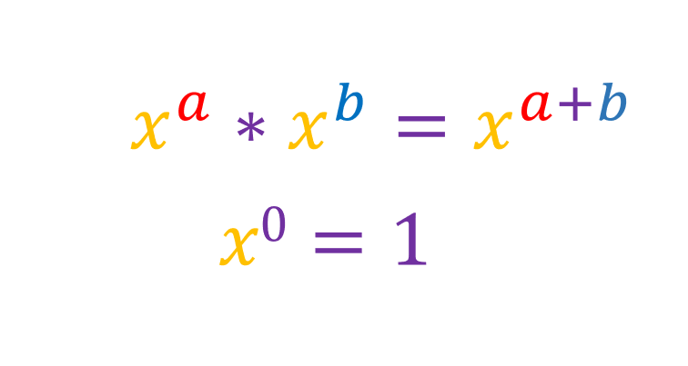
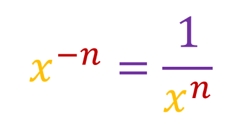
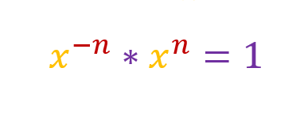
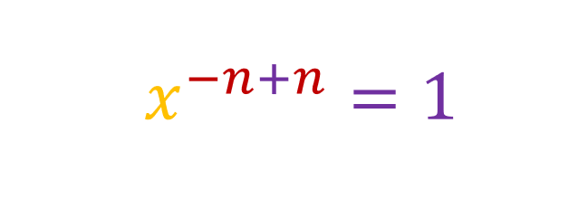
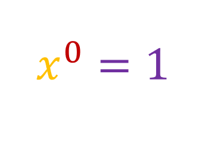

Before showing the proof, there are two things you must know:
Lets call these two our first and second axioms. What we are trying to prove is this:
We can write this as:
Using the first axiom, we can do this:
If we simplify this, we get:
And this matches with our second axoims, proving that [x-n is equal to 1/(xn)].